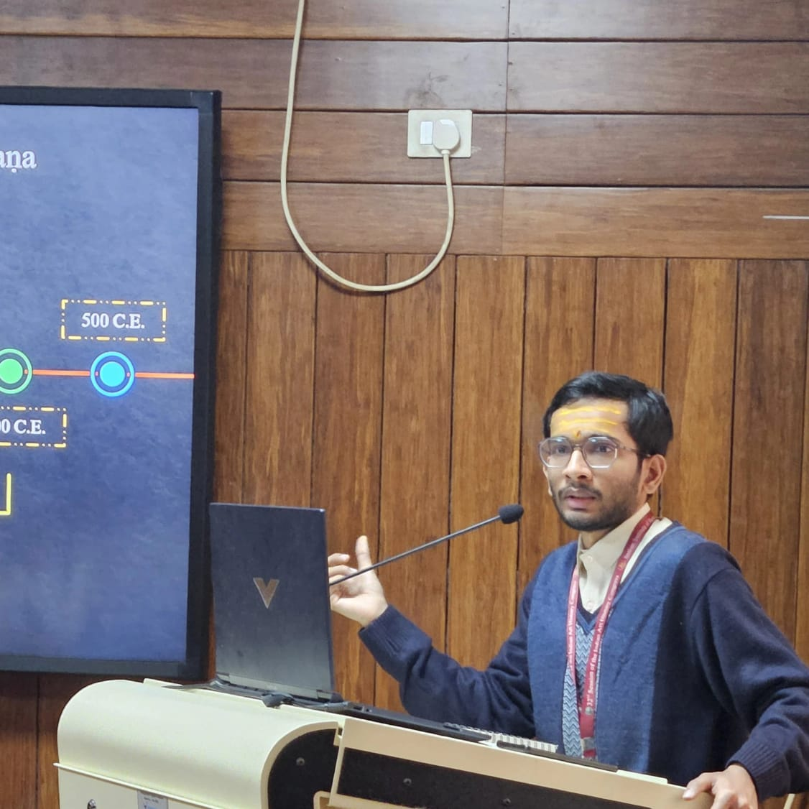
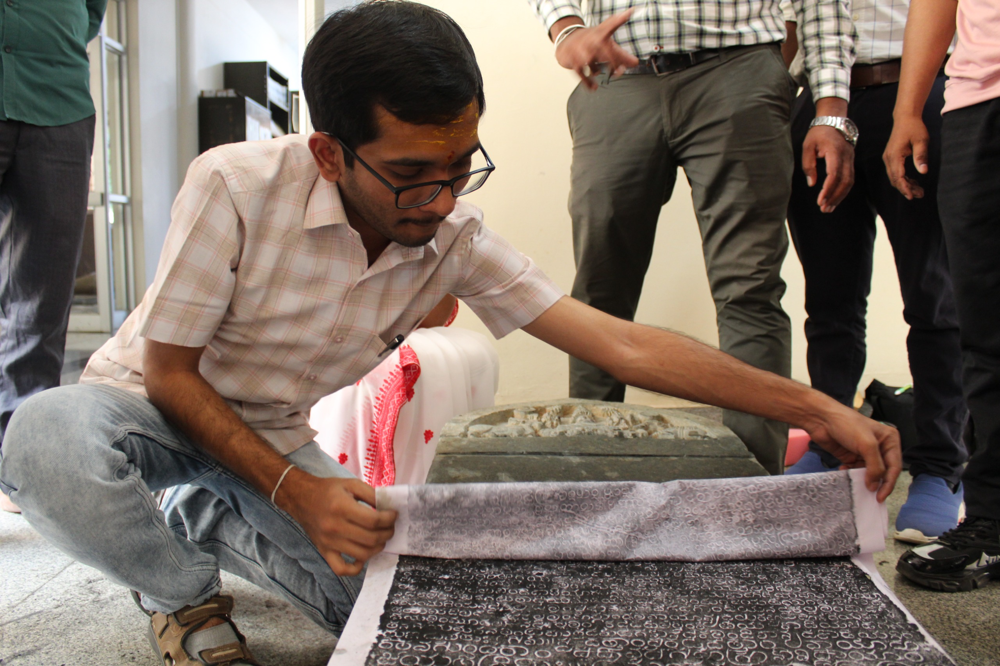

Tradition of Sanskrit Lexicon (Kośas)
Deccan College Post-Graduate & Research Institute, Pune.
Palaeography · Epigraphy · Numismatics
विद्यया अमृतम् अश्नुते
An Indologist reading the past in stone, palm-leaf and coin — a scholar of Sanskrit, Prakrit and Pali, of ancient Indian scripts, and of Jaina heritage, manuscripts and iconography.

Parichaya · परिचय
Devesh Chetan Shah is an Indologist and heritage scholar specialising in Palaeography, Epigraphy and Numismatics, with a firm grounding in Sanskrit, Prakrit and Pali. Born in 1997 in Amalner, Maharashtra, his scholarship moves between the manuscript library and the rock-cut cave — reading inscriptions, recovering forgotten icons, and tracing the intellectual history of Jaina India.
He holds a Master of Arts in Palaeography, Epigraphy & Numismatics from the Indian Institute of Heritage, Noida, and a Master of Arts in Sanskrit from Savitribai Phule Pune University. He presently serves as a Research Assistant at the Bhandarkar Oriental Research Institute (BORI), Pune — contributing to the Jaina Prosopography Project, in collaboration with SOAS, University of London, and to the Manuscripts Editing and Translation Project.
His published work spans the re-identification of Jaina icons, the recreation of the astrolabe as an astronomical instrument, the Jaina Rāmāyaṇa tradition, and Prakrit poetics — appearing in academic journals across India.

Vidyā · विद्या
Indian Institute of Heritage (formerly National Museum Institute), New Delhi / Noida.
Department of Sanskrit & Prakrit (C.A.S.S.), Savitribai Phule Pune University.
Sir Parashurambhau College, Pune (with Philosophy and Logic).
Tilak Maharashtra Vidyapeeth, Sadashiv Peth, Pune.
Deccan College Post-Graduate & Research Institute, Pune.
Bhadantacharya Buddhadatta Pali Promotion Foundation.
Bhandarkar Oriental Research Institute & Heritage India.
INSTUCEN Trust, Mumbai & Directorate of Archaeology, Maharashtra.
BORI, Pune — mentored by Dr. Radhavallabh Tripathi.
Sanmati-Teerth, Pune — mentored by Dr. Nalini Joshi.
Karma · कर्म
Jaina Prosopography Project, Bhandarkar Oriental Research Institute, Pune — in collaboration with SOAS, University of London.
Manuscripts Editing & Translation Project, Bhandarkar Oriental Research Institute, Pune.
Indian Institute of Heritage (deemed university, Ministry of Culture, Govt. of India), New Delhi / Noida.
Granthāḥ · ग्रन्थाः
Yantrarājaracanā: An Astrolabe Explained
Recreating an Ancient Astronomical Instrument — Astrolabe
Mallinātha or Lakṣmī? A Re-Identification of a Jaina Icon utilising Sanskrit Texts on Iconography
The Jaina Rāmāyaṇa — Paumacariya of Vimalasūri
Pāiyakavvapahā
Jaina Devatāṁcyā Viśvāta
Jaina Dharmātīla Strī Devatā
Bhāratīya Śailacitra Abhyāsāce Pitāmaha
Saṭṭaka from the Perspective of Daśarūpaka of Nāṭyaśāstra
Vyākhyāna · व्याख्यान
A 10-day online course conducted with GaMaBha.
Online lecture on Ancient Jainism.
Online lecture, Indigo Roots.
Tattvajñāna te Purātattva — Sane Guruji Vidya Mandir, Amalner.
Online lecture on the Waarsa Podcast.
Sammāna · सम्मान
Fellowship by the INFOSYS Foundation & BORI for the research project “The Study of a Hindu Astrolabe in the Manuscript Department of BORI, Pune.”
Maharashtra Tattvajñāna Pariṣhad, Gurudwara Gurunanak Darbar & Pune District Sikh Association.
Arihant Jagruti Manch, Pune.
Bhāratīya Bhāṣā Samiti & Shri Lal Bahadur Shastri National Sanskrit University.
Bhandarkar Oriental Research Institute, Pune.
Bharat Itihas Samshodhak Mandal, Pune.
Bhāṣā & Lipi · भाषा व लिपि
Native Gujarati, Marathi
Fluent Ahirani, Hindi, Marwari, English
Working Sanskrit, Prakrit, Pali
Jīvana · जीवन
Sampark · सम्पर्क
For collaborations, lectures, manuscript & epigraphy consultations, or research enquiries.